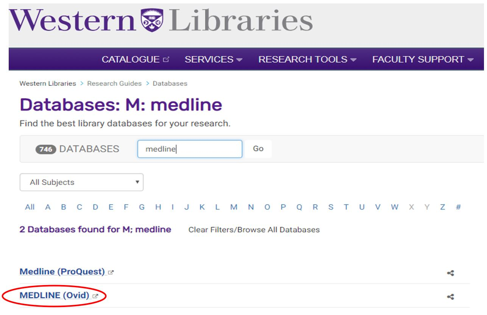
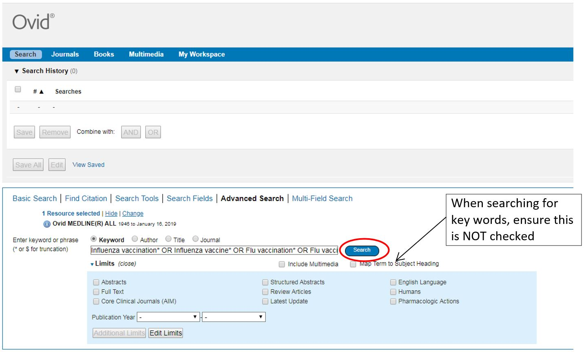
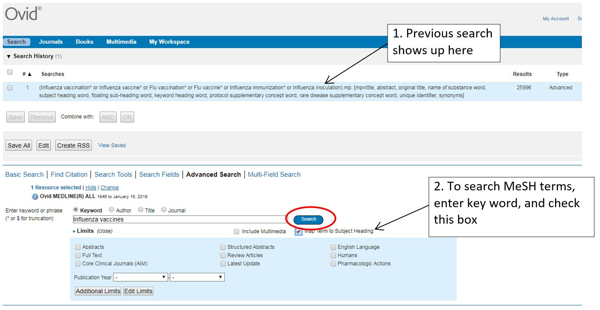
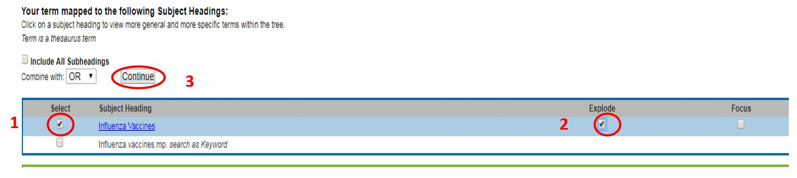
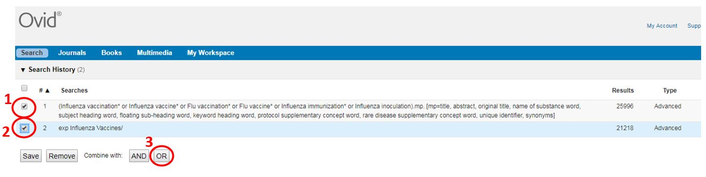
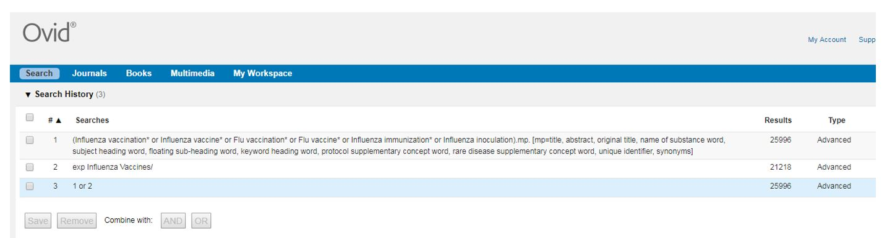
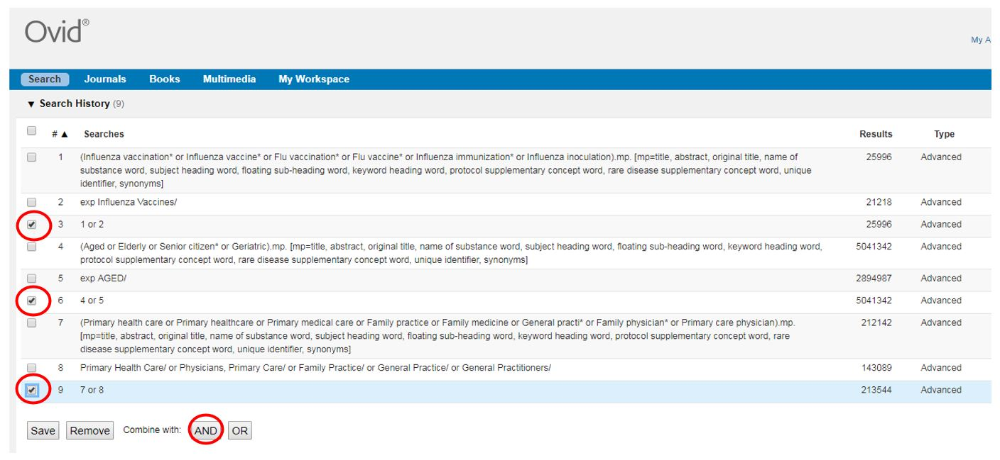
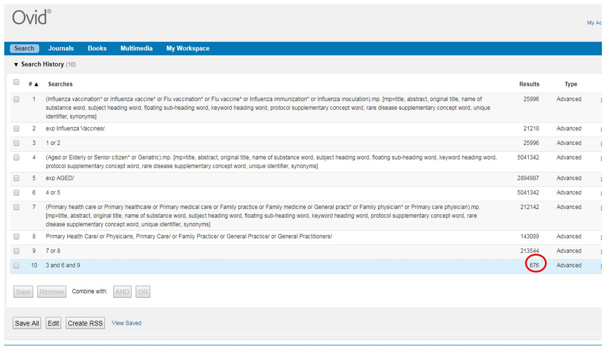
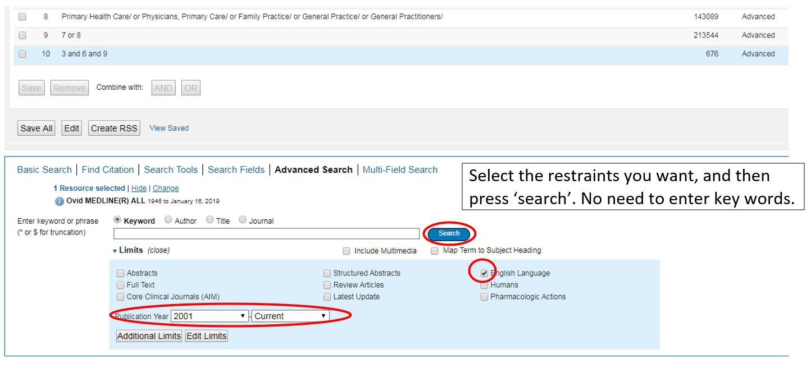
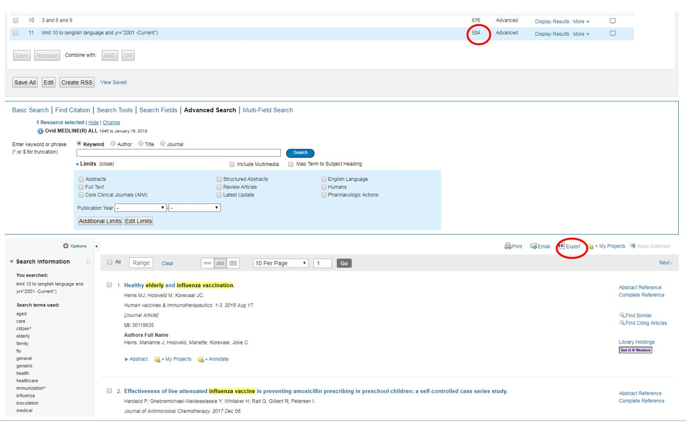

Study Design 5: Systematic Reviews
Topic: Review of systematic reviews and the steps involved in conducting your own review. A step-by-step example of the search strategy is also presented.
Importantly, the guide below is brief and reviewing the Cochrane Handbook and working with a librarian and statistician is highly advisable.
What is it? What do I need to know before I start?
Systematic reviews address a specific research question by identifying and then combining all available evidence using explicit, systematic methods that are specified a priori to minimize bias. Systematic reviews may be completed with or without a meta-analysis (i.e. use of statistical methods to quantitatively summarize the results of independent studies).
The steps involved include: protocol development, searching for studies, assessing citations and full-text reports for eligibility, assessing risk of bias, collecting data, pursuing missing data and unpublished studies, analyzing the data, interpreting the results, and writing the review.
Numerous programs are available, and should be used to facilitate the process of managing/screening articles. For example, Covidence.
Process of Conducting a Systematic Review
1. Develop a study protocol
Develop a study protocol to establish and document search strategy and methodology in advance. This should include clearly stated objectives, pre-defined eligibility criteria, systematic search strategy to identify all potential studies, an assessment of validity of included studies, and data to be collected.
Criteria that will force the unnecessary exclusion of studies should be avoided.
It is encouraged that systematic reviews are registered at PROSPERO and/or protocols are published. Changes to the protocol are sometimes necessary, but should not be based on how they affect the outcome of the research study; changes should also be explicitly reported.
2. Search for articles
Seeking the help of a research librarian is highly recommended to understand which databases may be relevant and how to access them, how to identify the proper keywords for the search, and other practical issues.
The search should be based on the main concepts being examined in the review. That is, use search terms relating the to 1) health condition of interest, 2) intervention of interest, 3) study design (e.g. randomized trial); avoid using too many different concepts. You should aim for high sensitivity; i.e. extensive search so that all eligible studies are identified and included. It is however, necessary to strike a balance between comprehensiveness and relevance.
Search using keywords and subject headings (also referred to as MeSH terms). Many databases can be searched using standardized subject headings (e.g. MeSH terms) that are assigned by the indexers. They provide a way of retrieving articles that may use different words to describe the same concept and provide information beyond keywords. To ensure you’re not missing important terms, examine articles you know fit your criteria and review the key words and MeSH terms associated with such articles. Use Boolean operators (AND, OR, and NOT) to facilitate the search (e.g. for alternate spelling / synonyms). Use asterisks for truncation (e.g. “random*” for random or randomised or randomized, etc), and ‘?’ for wildcard (e.g. “wom?n” for woman or women).
Multiple databases should be used – e.g. MEDLINE, EMBASE, CINAHL, Web of Science, Scopus. The appropriate databases will depend on your review (e.g. PsychINFO for mental health topics). Clinical Trials registers and trials results registers are an increasingly important source of information to ensure that publication bias is minimized (e.g. to minimize the “file-drawer problem”). Forward and backward citation tracking should also be used (manually screening the studies that cite the studies in your review, and screening the reference list of the studies in the review, respectively).
3. Screening identified studies
All stages of the screening process must be completed by two people independently; this will substantially reduce the likelihood of errors; you should pre-specify the process of handling discrepant results.
Once the search is completed, and the citations extracted, upload the citations to your software program of choice to help facilitate the screening process (e.g. Covidence.org). Use the software to identify and delete duplicates, then screen articles in two stages. First, review titles and abstracts and remove obviously irrelevant reports (be overly inclusive). Second, retrieve full text of remaining articles and thoroughly review to determine whether all inclusion criteria are met; contact study corresponding authors if clarification is needed. Careful notes should be kept throughout the entire process documenting decisions, e.g. reasons for exclusion.
4. Collecting data
It is important that data extraction is completed by two people independently (to substantially reduce errors).
Data to be collected (e.g. study details, patient demographics, and outcomes) are identified a priori. Be cautious to avoid duplication of data – e.g. data from different articles, but reporting on the same study.
Contact study corresponding authors if clarification or other data are needed.
5. Assessment of Risk of Bias / Validity
It is important that this assessment is completed by two people independently (to substantially reduce errors).
This is an important part of the review because problems with the design and execution of individual studies raise questions about the validity of their findings. Specific tools and checklists have been developed for different study designs.
6. Report Data and Undertaking Meta-Analyses
Analyses may be narrative (e.g. a structured summary and discussion of the studies’ characteristics and findings), or quantitative (e.g. meta-analyses - involving statistical analysis). You may not know whether you can conduct a meta-analysis until all the data have been systematically collected; included studies may be very different from each other for their results to be combined, or they may not present data in a similar way to allow for direct comparisons.
Tables and figures help to present details and results of included studies in a systematic and clear format.
Step-by-step guide to conducting the search
Visit your institution’s library, and navigate to the Databases list:
Find and utilize different databases, e.g. MEDLINE (Ovid) 
Begin your search, inserting one set of keywords/MeSH terms at a time, and combine with AND / OR. 
Now search for the corresponding MeSH terms. Can also visit PubMed to search their list of MeSH terms and search for those directly. 
Select the appropriate MeSH terms. Select explode if you’d like to include all subheadings of the MeSH term. Then click continue. 
Now, combine the searches from the keywords and MeSH terms; select the boxes and press “OR”. 
New search results appear. 
Repeat the process to search for additional sets of keywords and MeSH terms. Then combine the results of the different sets of searches using “AND”. 
This is your final search result. A total of 676 articles were identified and must be screened. 
You can additionally add more criteria, such as language or year restraints. Additional limit options are available by clicking “additional limits”. Caution should be taken for certain limits (based on sex, age groups, study design etc.) as these limits can be wrong and incorrectly exclude studies that are eligible. 
Updated search now includes 504 articles. These articles appear below and can be exported so they could be entered into systematic screening programs (e.g. Covidence) to facilitate the screening process. 
Repeat the process using different databases, e.g. EMBASE, CINAHL.
Guidance from a librarian is strongly recommended!
References and Further Readings
Reporting guidelines that should be followed: Preferred Reporting Items for Systematic Reviews and Meta-Analyses (PRISMA) http://www.prisma-statement.org/
Higgins JPT, Green S (eds.). Cochrane Handbook for Systematic Reviews of Interventions Version 5.1.0 [updated March 2011]. The Cochrane Collaboration, 2011. www.handbook.cochrane.org
Murad et al. How to Read a Systematic Review and Meta-analysis and Apply the Results to Patient Care: Users’ Guides to the Medical Literature. JAMA. 2014;312:171–179. doi:10.1001/jama.2014.5559
Siddaway AP et al. How to do a systematic review: a best practice guide for conducting and reporting narrative reviews, meta-analyses, and meta-syntheses. Annual review of psychology. 2019 Jan 4;70:747-70.